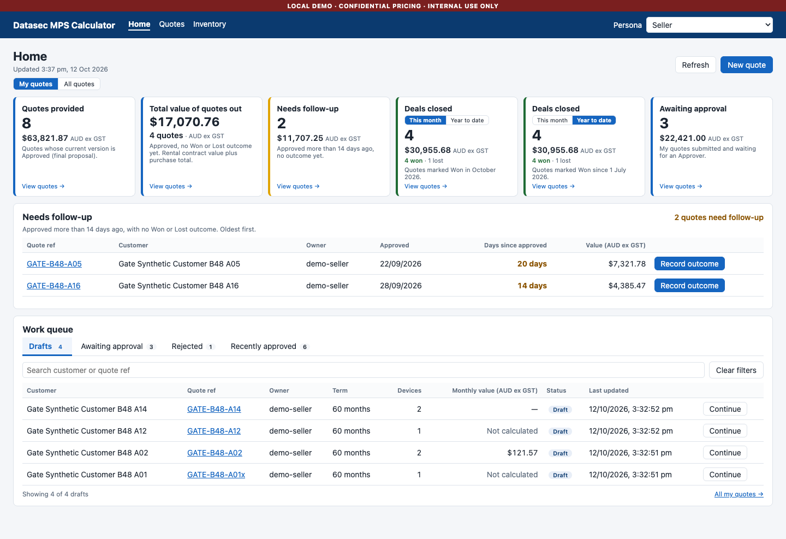
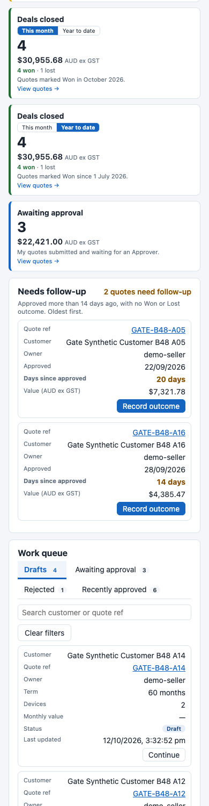

MPS calculator: what goes onto the hosted site with the home dashboard
Datasec / MPS Commercial Calculator · Monday, 12 Oct 2026 · Hosted now: db8edfd (deployed by B33) · Next hosted build: main after PR #28 merges (PR #28 head c8eda15; gate B52: GO WITH NOTES)
What the hosted site gains (one line per PR)
- PR #25 (B35, quote lifecycle audit): each quote now keeps a behind-the-scenes history: created, saved, calculated, submitted, approved, rejected, and every proposal generated. Rental price-override changes are now logged, and a quote can be copied through the API. No screen changes, and the customer proposal is byte-for-byte unchanged.
- PR #26 (B37, fix round for gate B36): fixes to #25. A failed save no longer leaves a false "proposal generated" record. Re-sending the same rental override no longer logs a false change. A draft whose fleet repeats a line number is now refused, with a message.
- PR #27 (lane A2, B40 + B42, source lifecycle admin): groundwork for administrators to stage, check, switch and roll back price-book versions. It is off on the hosted site: off by default, and it refuses to start in hosted sign-in (Entra) mode. Hosted users see nothing new. An administrator who calls those API routes gets "the store is off".
- PR #28 (B46 home dashboard + B49 fix round): the new Home start page. It has six figures (Quotes provided, Total value out, Needs follow-up, Deals closed this month and year to date, Awaiting approval), a Needs follow-up list and the work queue, plus a Quotes list filtered by whichever tile you click and Record outcome (Won/Lost). B49 fixed the approval counts, the "1 quote" grammar, the failed-figures message and the days count.
Not in this deploy: the feedback pill (B47, branch b47/feedback-pill, is not part of PR #28). No setting changes come with it: the price-book version store stays off.
Behaviour changes a user will notice
| Change | What the user sees | From |
|---|---|---|
| Home is the start page | The top bar reads Home · Quotes · Inventory. The old quote list now lives at Quotes, and each Home tile opens it already filtered. An Administrator with no quote role sees the figures only. | #28 (B46) |
| Won/Lost recording | The quote's owner or an Approver can mark an Approved quote Won or Lost, from the follow-up row or the quote screen. A Won/Lost badge with the date and name follows. Once recorded it cannot be changed (a second try gets W-11). It feeds Deals closed and takes the quote out of Needs follow-up. | #28 (B46) |
| Awaiting approval for Approvers | For anyone holding Approver, including the pricing analyst, the Home queue's Awaiting approval tab lists only the quotes they may approve. Their own submitted quotes no longer appear there; they are still in Quotes ("My quotes submitted"). Under My quotes, the analyst's tab now shows other people's quotes, while its "All my quotes →" link opens only their own. | #28 (B49) |
| Seller "Awaiting approval" tile | It counts the Seller's own submitted quotes under both My quotes and All quotes. Under All quotes the queue tab below it still lists everyone's, so the tile and the tab can show different numbers (3 vs 7 on the gate's data). | #28 (B49) |
| Phone width | Screens no longer scroll sideways at phone width: 13 of 14 screens were fixed, and the analyst's rental quote screen still scrolls, as before. | #28 (B46) |
| Rare display glitches | Both clear on a refresh. If one of Home's three reads fails, the Awaiting approval tab can show "0" with no error while the tile shows the right count (D-F1). On a slow load, "14 days" can show under "more than 14 days ago" (D-N1). | #28 (B49) |
| Quotes with no owner / shared names | Quotes made before owners were recorded belong to nobody: they are in no Seller's My quotes, and only an Approver can record their outcome. If Datasec sign-in tokens carry no display name, several people show as "Signed-in user". | #28 (B46) |
| Repeated fleet line numbers | An older quote stored with a repeated fleet line number can no longer be saved until it is renumbered. It shows W-04. The app never creates such a quote, and the gates ask for a hosted count first (PRE-1). | #26 (B37) |
| Behind the scenes only | Every proposal generated is recorded (who, when, draft or approved), without bumping the quote's revision. The rental override audit is not shown on any screen (the price-audit panel is purchase-only). | #25, #26 |
Screenshots of the new Home screen (synthetic data only)
From QA gate B48's evidence (Briefs/2026-10-12_B48_evidence/), in live mode against a synthetic store. Both show commit 0c74086 (B46 head, before the B49 fix round); B49 left no screenshots. Since then, B49 changed: "14 days" on row A16 now reads "15 days", and "1 quotes" now reads "1 quote". The approval counts changed only for people holding both Seller and Approver, who are not shown here. The red "LOCAL DEMO" bar and the Persona picker belong to the dev shell. The hosted site shows "Signed in as … / Sign out" instead.

0c74086. File 2026-10-12_b48-home-seller-1440.png (sha256 10ed9394d271…).
0c74086. Top 1500 px of 2026-10-12_b48-home-seller-390.png (sha256 ba6816b66810…; the full-length file is in this folder).New words since db8edfd that you have not approved on a card
The table lists strings a person can meet on the hosted build (Entra sign-in, version store off), verbatim, from the STATUS NEW WORDS sections of B35, B37, B40, B42, B46 and B49 and from gates B36, B38, B41, B43, B48 and B52. W-10 to W-12 and W-21 to W-23 were on card mpscalc-dashboard-words-and-queue-1012, which was withdrawn without a ruling. The words of the approved home-dashboard mock (§A) are not repeated here. Left out, with counts: API documentation text (openapi/API.md descriptions), internal field and registry names (105 registry keys, B37), server-start messages only an operator sees, and every string of the price-book version store, which cannot be switched on hosted: B40 305 strings and B42 83 strings, counted 305/305 and 83/83 by gates B41 and B43.
| ID | Words (verbatim) | Where it shows · who |
|---|---|---|
| PR #25 · B35 (3 rows) · API only | ||
| W-01 | Set when the quote was duplicated. | Price-audit panel (purchase quotes, internal-metrics users), as the "reason", on a quote copied with the API duplicate call. No app button makes a copy, so nobody sees it today. |
| W-02 | Reading a quote needs the role Seller or Approver (SEC-RBAC-001). | API 403 FORBIDDEN on the duplicate call. Unreachable today: every quote reader already has one of those roles. |
| W-03 | created · draft-updated · calculated · submitted · approved · rejected · new-version · duplicated-from · duplicated-to · proposal-generated | Event kinds in a quote's lifecycle history, in the API answer for internal-metrics callers only. No screen shows them, and they never appear on the proposal. |
| PR #26 · B37 (1 row) · on screen, rare | ||
| W-04 | fleet[n].lineNumber is used by more than one fleet line; each line needs its own number. | Rental quote screen, after "400 BAD_REQUEST Bad Request: The draft is not valid.", when saving an older quote that repeats a fleet line number. Any Seller can hit it. |
| PR #27 · lane A2, B40 + B42 (5 rows) · API only, Administrator | ||
| W-05 | The source version store is off on this server (MpsCalc:SourceVersions:Path is empty), so source versions cannot be staged, validated, activated or rolled back here. The active sources are the reference store file. | 409 SOURCE_LIFECYCLE_OFF on any of the new admin source routes. This is what hosted answers. |
| W-06 | The list filters are not valid. | 400 on GET /admin/sources with a bad ?type= or ?state=. |
| W-07 | type must be one of DeviceCatalogue, DeviceOptions, SoftwareCatalogue, CatalogueOverlay, once. | Detail line under W-06. |
| W-08 | state must be one of Draft, Validating, Active, Expired, Failed Validation, Superseded, once. | Detail line under W-06. These are the six state words. |
| W-09 | The source version request failed on the server. The fault is logged by its type only, never its text. Read the source list and the source events before you retry. | 500 SOURCE_LIFECYCLE_FAILED, returned only if a source route hits a bug. |
| PR #28 · B46 + B49 (18 rows) | ||
| W-10 | Only the quote's owner or an Approver can record its outcome. | On screen: the Record outcome control, after a refusal (403 OUTCOME_FORBIDDEN). |
| W-11 | This quote's outcome is already recorded; it cannot be changed. | On screen: the Record outcome control in a stale tab (409). The gate saw it on screen. |
| W-12 | Version {n} is {status}; an outcome is recorded on an Approved version only. | On screen: the Record outcome control when the quote is no longer Approved (409). |
| W-13 | outcome must be won or lost. | API only (400 on the outcome call). |
| W-14 | The figures take one optional query parameter, scope=mine or scope=all. | API only. It shows only for a hand-typed figures call. |
| W-15 | scope=mine counts your own quotes, which needs the role Seller. Leave scope out, or send scope=all. | API only (400 SCOPE_MINE_NEEDS_SELLER). |
| W-16 | Unknown query parameter. The quote list takes scope, status, outcome, followup, period, canApprove, group, q, owner. | API only (400 INVALID_FILTER). The app's own links drop unknown values. |
| W-17 | The query parameter {name} may be given once. | API only (400 INVALID_FILTER). |
| W-18 | {name} must be one of {values}. | API only (400 INVALID_FILTER). |
| W-19 | {name} is at most 200 characters, with no control character. | API only (400 INVALID_FILTER). |
| W-20 | period needs outcome=won or outcome=lost. | API only (400 INVALID_FILTER). |
| W-21 | Whose quotes | Screen-reader label on the My quotes / All quotes switch (Home). |
| W-22 | Quote groups | Screen-reader label on the work-queue tabs (Home). |
| W-23 | Quote list | Screen-reader label on the filtered Quotes table. |
| W-24 | 1 quote · AUD ex GST | On screen: Home tile 2 when the count is 1. The mock had "quotes" for every count; B49 corrected it. |
| W-25 | 1 quote needs follow-up | On screen: Needs follow-up header hint when the count is 1. B49 grammar correction. |
| W-26 | Quotes marked Won since 1 July 2026. | On screen: the Deals closed (year to date) tile. The mock showed both year forms; this one follows your financial-year default. |
| W-27 | No quotes yet. | On screen: an existing phrase, now also shown on a filtered Quotes list that matches nothing, even when quotes exist. |
Rows per PR: #25: 3 · #26: 1 · #27: 5 · #28: 18 · total 27. Of these, 10 can show on a screen (W-04, W-10 to W-12, W-21 to W-27). Pre-deploy checks the gates ask Friday to run, as counts only, before the switch: PRE-1, quotes with a repeated fleet line number; PRE-2, quotes with no owner (Submitted split out) and the number of distinct owner names; POST-1 to POST-3, the figures, the list and the analyst tile-equals-list check after the deploy.